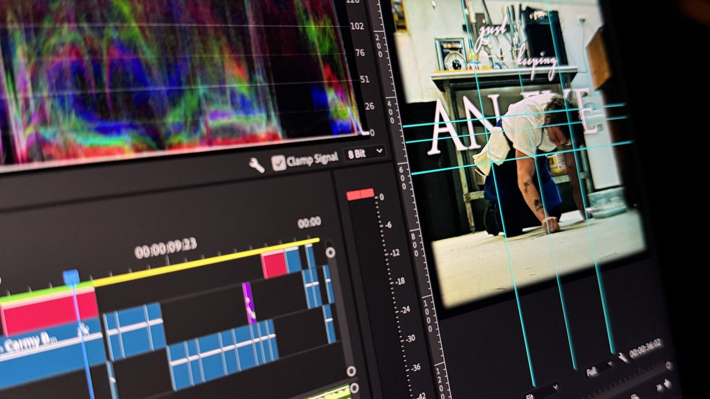
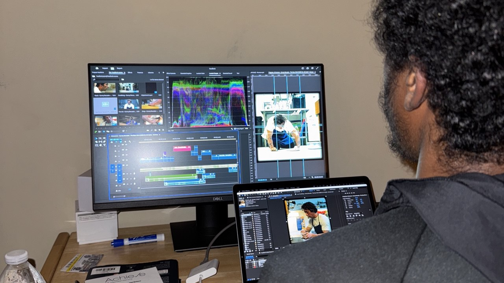
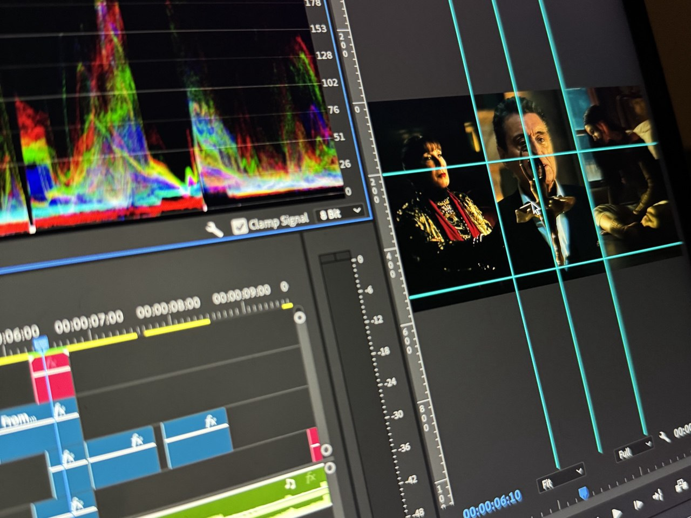
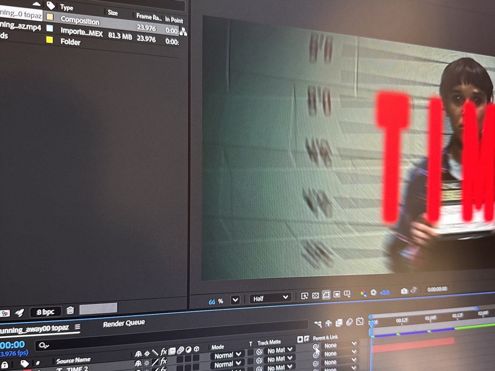
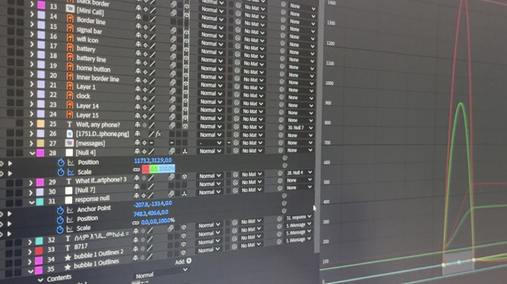
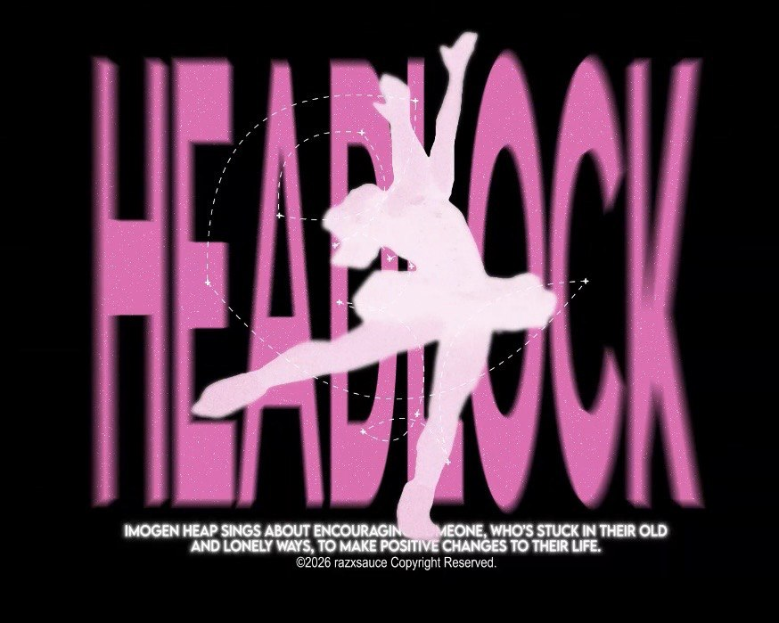

What does an editor do?
Video editing is the process of taking raw video footage and organizing, cutting, and modifying it to create a finished video. It involves selecting the best clips, arranging them in a meaningful order, adjusting timing, and adding elements like transitions, music, sound effects, and visual enhancements. Through editing, separate pieces of footage are combined to form a clear story or message. The goal of video editing is to turn unedited recordings into a polished and engaging final product that communicates ideas effectively to an audience.

| Editing Element | Description |
|---|---|
| Cutting Clips | Selecting and trimming footage to keep the most important moments. |
| Transitions | Smoothly moving from one clip to another to improve visual flow. |
| Color Correction | Adjusting brightness, contrast, and color to improve visual quality. |
| Sound Editing | Balancing music, dialogue, and sound effects in the video. |
| Visual Effects | Adding effects, graphics, or animations to enhance the video. |
Who are Video Editors?
Video editing is done by people known as video editors. These individuals work with recorded footage to assemble, cut, and refine videos into a final product. Video editors can include professionals in the film, television, and media industries, as well as content creators who produce videos for platforms like YouTube or social media. Anyone with access to editing software and footage can practice video editing, from beginners learning the basics to experienced editors who specialize in storytelling, visual effects, or cinematic production.

| Section | Description |
|---|---|
| Who | Video editing is done by people known as video editors. These individuals work with recorded footage to assemble, cut, and refine videos into a final product. Video editors can include professionals in the film, television, and media industries, as well as content creators who produce videos for platforms like YouTube or social media. Anyone with access to editing software and footage can practice video editing, from beginners learning the basics to experienced editors who specialize in storytelling, visual effects, or cinematic production. |
| Video Editing Timeline | In the process of making my edit. |
When does video editing take place?
Video editing takes place after the footage has been recorded during the production process. Once filming is complete, the editor reviews the raw clips, selects the best moments, and arranges them into a structured sequence. Editing can happen at different stages depending on the project, but it typically occurs during post-production, where visuals, sound, and effects are refined to create the final version of the video.

| Stage | Activity |
|---|---|
| Initial Review | Watch all recorded clips from filming the Olympics footage. |
| Selection | Pick the most exciting moments: gold medal finishes, crowd reactions, and dramatic plays. |
| Assembly | Arrange selected clips into chronological order for storytelling. |
| Refinement | Adjust brightness, contrast, and apply color grading to unify look. |
| Timeline Example | Color grading and refining one of my edits to match the music tempo. |
Where can editing be done?
Video editing can be done almost anywhere as long as a computer and editing software are available. Many people edit videos at home on personal computers, while professionals may work in studios or production offices. Because editing is done digitally, it can also be done remotely or while traveling, making it a flexible hobby that can be practiced in many different environments.

| Location | Example Activity |
|---|---|
| Home | Edit on my laptop using Adobe Premiere Pro while listening to reference music. |
| Studio | Professional environment for collaborating on a short film with team members. |
| Coffee Shop | Quick edits or rough cuts using a lightweight laptop and headphones. |
| Remote/Travel | Edit sports clips from cloud storage while traveling, syncing to timeline offline. |
| Timeline Example | Working on an edit from home on the weekend to finalize a highlight reel. |
How is video edited
Video editing is done using specialized software such as Adobe Premiere Pro that allows editors to import footage, trim clips, arrange them on a timeline, and add effects or audio. Editors begin by reviewing all recorded footage and selecting the best clips. These clips are then organized into a sequence that tells a story or delivers a message. Additional elements such as music, transitions, color correction, and visual effects are added to improve the overall quality of the video.

| Tool / Step | Practical Example |
|---|---|
| Software | Adobe Premiere Pro for trimming clips, arranging sequences, and adding audio tracks. |
| Clip Selection | Choose high-impact clips: close-ups of athletes, reaction shots, and crowd cheers. |
| Timeline Editing | Drag clips onto timeline, align with beats of the song “Headlock”. |
| Effects | Apply transitions, motion graphics, and text overlays for highlights. |
| After Effects | Create animated title sequences and smooth motion graphics for intro/outro. |
Why
People enjoy video editing because it allows them to be creative while working with technology. Editing makes it possible to transform simple recordings into engaging and meaningful content. It can also be a way to tell stories, share experiences, or create entertaining media for others to watch. For many hobbyists, the process of shaping footage into a finished video is both satisfying and rewarding.

| Motivation | Real Example |
|---|---|
| Creativity | Transform raw Olympic footage into an energetic highlight reel that tells a story. |
| Storytelling | Combine reactions, key plays, and music to convey the excitement of the event. |
| Skill Building | Practice color grading, timing cuts to music, and creating smooth transitions. |
| Satisfaction | Publish the completed edit on social media and see audience engagement and feedback. |
| Editing Showcase | My most recent creative edit using Olympics footage and After Effects with the song "Headlock". |
AI Prompts
I used AI to help generate some of the text content for this website. I asked for help writing sections that explain video editing as a hobby. The prompts included requests such as writing explanations for the “Who,” “What,” “When,” “Where,” “How,” and “Why” sections about video editing. The generated text was then reviewed and adjusted to fit the content and purpose of the site. For this project, I used ChatGPT to help with part of the technical implementation of the website. Specifically, I asked for help creating the structure that allows a one-page website to switch between different sections when clicking navigation links. Example prompt used: “Provide the code to make navigation links switch between sections on a one-page website so only the selected section is visible at a time.” The generated code was reviewed and incorporated into the project to implement the required one-page navigation functionality.